Treasurer guide
This chapter is for club treasurers. Your job in Culturals covers the money side of your club's events. Before an event, you price its budget line by line so it can go for approval. After the event, you enter what was actually spent, attach receipts and settle the budget. The club's President and Vice-President can do the same budget work, so a budget can still be settled when the treasurer is away.
If you have not signed in yet, read Getting started first. Screenshots use the demo accounts of Kavya (Music Club treasurer), Deepa (Dance Club treasurer), Harini (Photography Club treasurer) and the Theatre Club treasurer.
What you see after signing in
The left sidebar has the usual student pages (Feed, What's on, My passes, Profile QR, Clubs). Under CLUB you also get:
| Page | What it is for |
|---|---|
| Club events | Your club's events and proposals, with their approval status. |
| New event | Propose an event, and optionally start its budget from a template. |
| Budget | Every budget your club has, from draft to settled. This chapter is mostly about this page. |
| Members & roles | Your club's members and who holds which role. |
Ordinary club members do not see your club's budgets. Only the President, Vice-President and Treasurer do.
Read the Budget page
Open Budget in the sidebar.
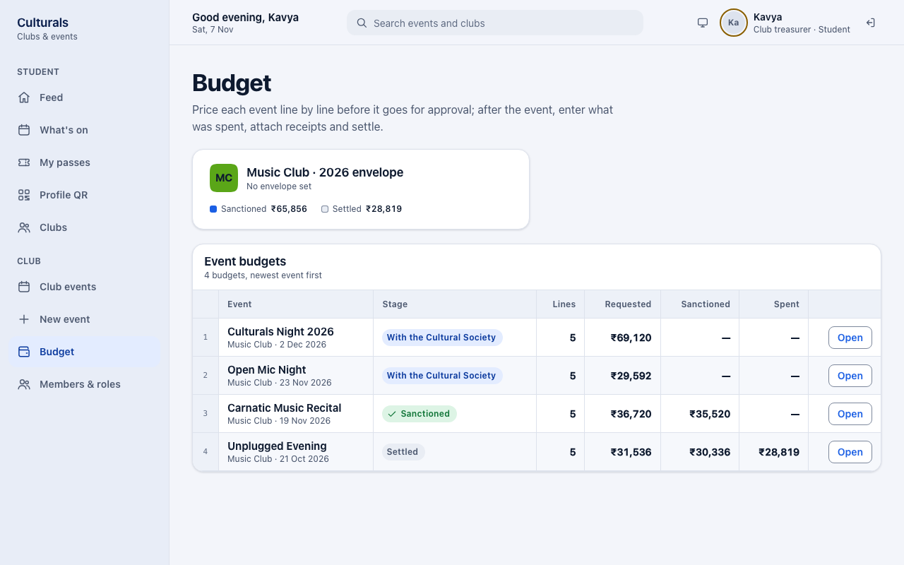
- The envelope card at the top shows your club's yearly allowance. It says how much is left, and its meter turns amber at 85 % used and red when you go over. Under the meter are two figures: Sanctioned (approved so far this year) and Settled (closed so far). If the college has not set an allowance for your club, the card says No envelope set.
- Event budgets has one row per event, newest first, with the number of lines and the Requested, Sanctioned and Spent totals.
- The button at the end of each row tells you what is next:
- Price it: you can still edit the budget.
- Settle: the event has run and the budget is waiting for you to settle it.
- Open: there is nothing for you to do right now, but you can look at it.
What the stages mean
| Stage | What it means | Can you edit amounts? |
|---|---|---|
| Draft | Not sent yet. You are still pricing it. | Yes |
| With the Cultural Society | The Cultural Society is reviewing it (cultural and literary clubs only). | No, amounts are frozen |
| With the Dean | The Dean of Student Affairs is reviewing it. Every budget goes here. | No |
| With the Vice-Chancellor | The Vice-Chancellor is reviewing it (big budgets and fests only). | No |
| Returned for changes | An approver sent it back. Revise it and send it again. | Yes |
| Rejected | Turned down. | Yes, but the proposal cannot go forward as it is |
| Sanctioned | Approved. After the event, you enter spend and receipts. | No, you only enter spend |
| Settled | Spend and receipts are complete and the budget is closed. | No |
Two other labels can appear next to the stage. No budget required means the event was declared nil (see below). Settlement due means it is time to settle.
How the budget size affects approval
The chain is: the Cultural Society (only for cultural and literary clubs), then the Dean (always), then the Vice-Chancellor (only when the total requested is above ₹50,000, or the event is part of a fest). The approval flow diagram shows the whole chain.
When a budget is over the limit, its page shows a yellow note: Above ₹50,000 — the Vice-Chancellor signs too. Expect the approval to take one more step.
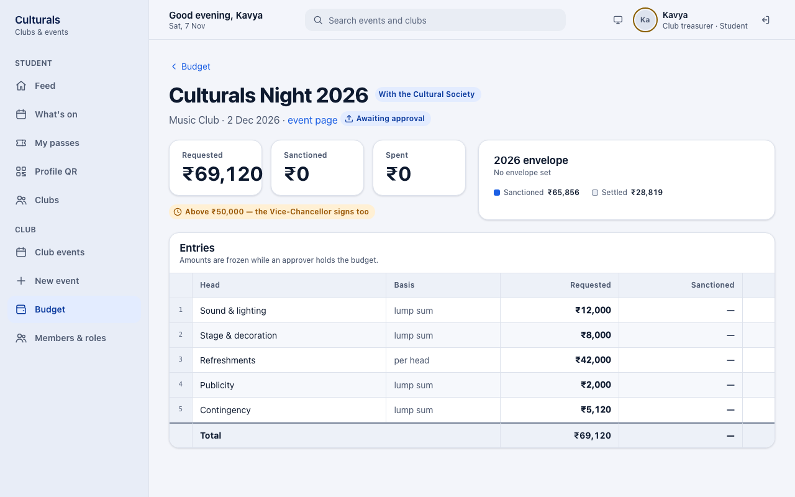
While an approver has the budget, the page says Amounts are frozen while an approver holds the budget. An approver can sanction less than you asked for on any line. That line then shows a small purple A mark, with your requested amount crossed out next to the sanctioned amount.
No club role approves its own budget. If you also hold an approval role, for example as a stand-in for the Dean, the app still will not let you decide on your own club's budget.
Start a budget from a template
Every event gets a budget when it is created. When you propose an event under New event, the Budget panel on the right lets you start that budget from a template instead of a blank sheet.
- Fill in the event details. Expected attendance matters, because lines marked per head (for example Refreshments) are worked out from it.
- Under Template, choose one: Competition, Exhibition, Performance or Workshop. You can also choose None — the Treasurer prices it to start with an empty budget.
- Check the preview. It lists each line, then a Contingency line (8 % of the other lines on top, as a buffer for surprises), then the Total requested. A green Society and Dean only note, or a yellow needs the Vice-Chancellor too note, tells you who will approve it.
- Decide when to send it: - Leave Send for approval now on and press Propose and send to send it straight to the approvers. - Turn the switch off and press Save draft if you want to adjust the lines first.
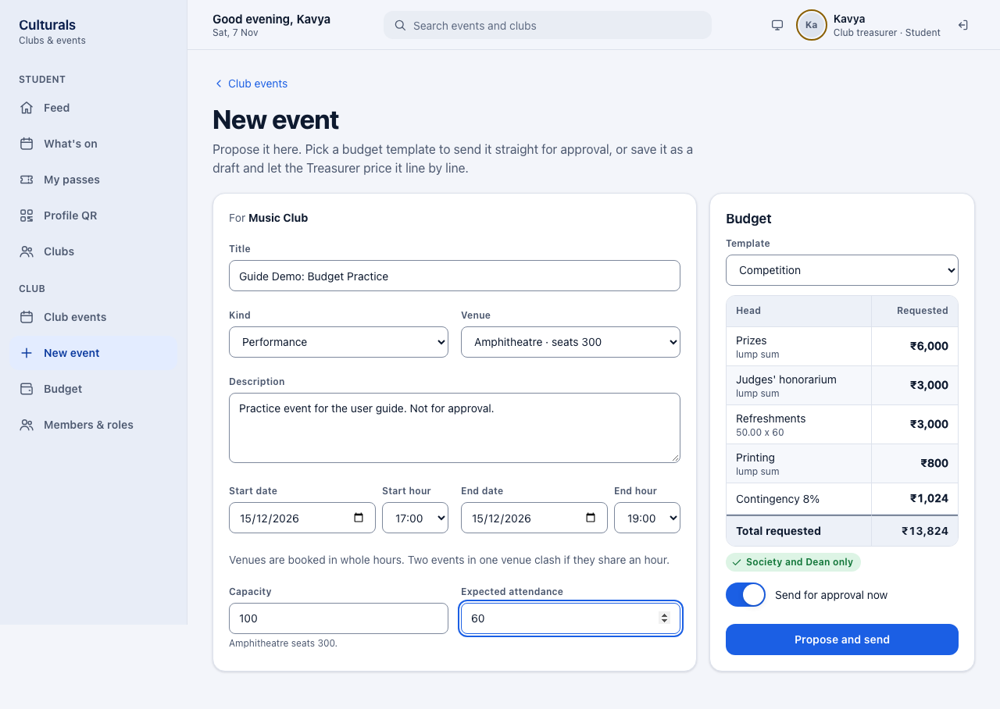
Price a draft budget
Open the budget from Budget (button Price it), or from the event page (Open budget).
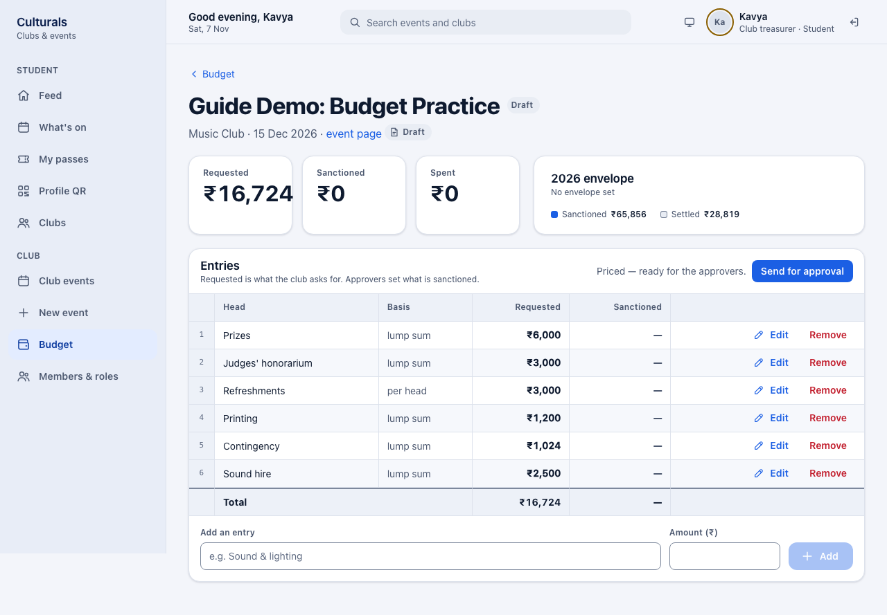
- Add a line: type the item under Add an entry (for example "Sound hire"), enter the Amount (₹) and press Add. Two lines cannot have the same name.
- Change a line: press Edit on its row, change the name or amount, then press Save. Cancel leaves it as it was.
- Delete a line: press Remove.
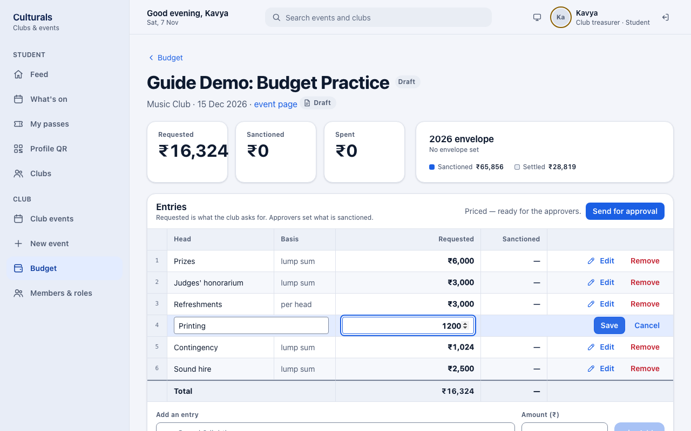
The Contingency line is worked out once, when the template is applied. It does not change when you add or edit other lines, so adjust it by hand with Edit if you need to.
Once the budget has at least one line, the header shows Priced — ready for the approvers. and a Send for approval button. You can send the proposal from there or from Club events.
Events that need no money: declare nil
An empty budget cannot go for approval. If an event really costs nothing (for example a talk in your own classroom), you must say so instead of leaving the budget blank:
- Open the budget while it has no lines.
- Under Or declare that this event needs no money, type the reason (at least a few words).
- Press Declare nil.
Approvers then see your reason and your name instead of a set of figures, and the budget list shows No budget required. To price the event after all, press Withdraw — price it instead. You can only declare nil when no line has an amount, so remove any priced lines first.
When your budget comes back
Instead of approving, an approver can return a budget for changes or reject it, and they must leave a comment either way. Read the comment under Approval trail on the event page. To get there, click event page under the budget's title.
Returned for changes: revise and resubmit
Short Film Screening (Photography Club) is an example of a returned budget. The Dean returned it with this comment: "Publicity looks high for an 80-seat screening, and the screening licence is missing. Trim publicity and add the licence, then resubmit."
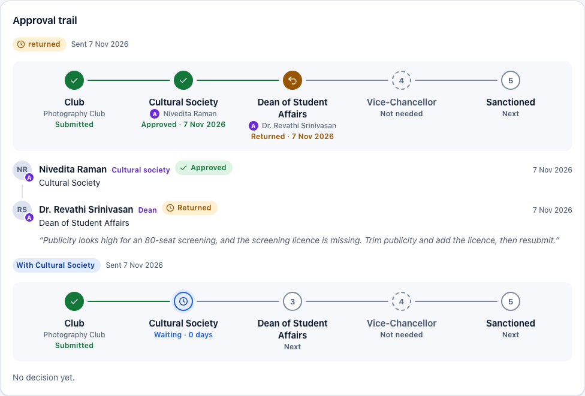
What the treasurer did:
- Opened the budget. While it is Returned for changes, the budget can be edited again.
- Pressed Edit on Publicity and lowered it to ₹600.
- Added a Screening licence entry of ₹2,500 under Add an entry.
- Pressed Send for approval on the budget (or on the event under Club events).
The resubmitted budget starts again at the first approver. The approval trail keeps the returned round with the Dean's comment, and shows the new round under it. While the new round is under review, the amounts are frozen again.
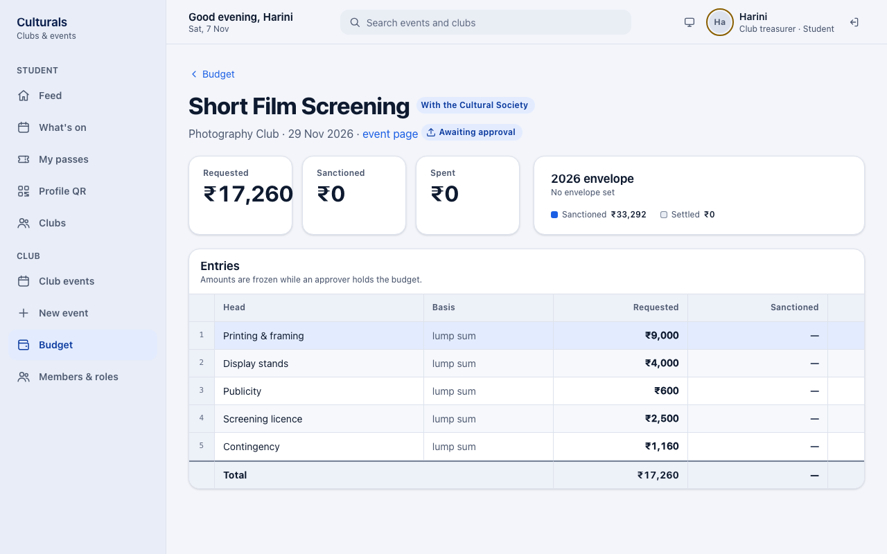
The contingency line did not change when the lines were edited (see the note under Price a draft budget), so check it before you resubmit.
Rejected: final
Late-Night Improv Marathon (Theatre Club) was rejected by the Dean: "Runs past the 10 pm campus curfew and has no security plan for 300 people. Not approved this semester." A rejected proposal cannot be sent again. If you still want to hold the event, propose a new event that deals with the reasons in the comment. Rejected proposals can be removed with Delete on the event page.
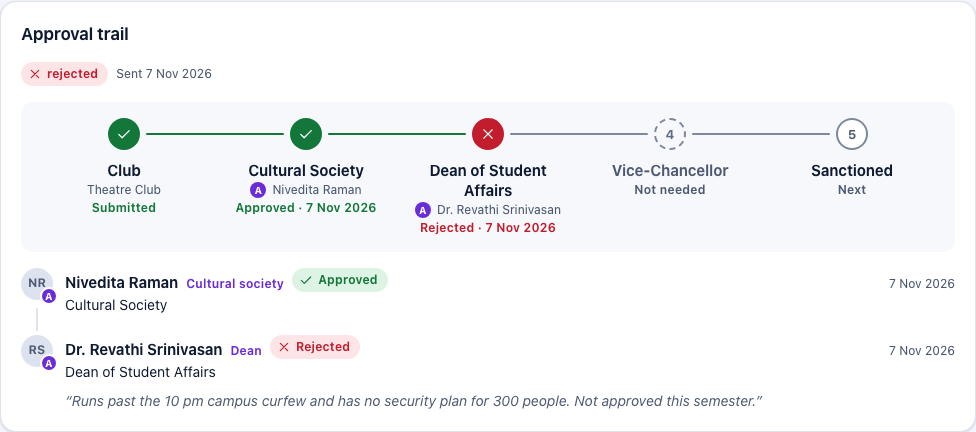
Once it is sanctioned: an example
Carnatic Music Recital went through the Cultural Society and the Dean and is now Sanctioned. The Dean cut Sound & lighting from ₹12,000 to ₹10,800 (marked A), so the sanctioned total is ₹35,520 against ₹36,720 requested. Plan your spending on the sanctioned figures. The card on the right now shows Spend against sanction instead of the envelope.
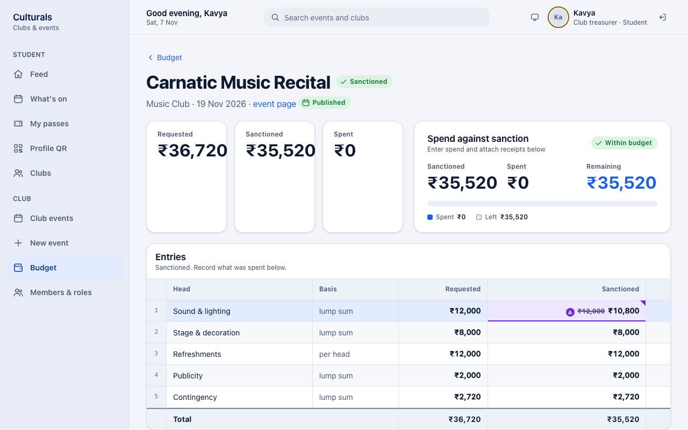
After the event: enter spend and attach receipts
Once the budget is Sanctioned and the event has run, the budget page has a Spend and receipts section with one block per line. Each block shows that line's sanctioned amount.
- Open the budget (button Settle on the Budget page).
- For each line, type the amount actually spent in Spent (₹) and press Save. Enter 0 for a line you did not use.
- If a line went over its sanctioned amount, it gets a red Over sanctioned label, and the Note field becomes Why it went over (required). Write the reason there and press Save.
- Receipts are required for anything above ₹5,000. For each such line, press Choose File, pick the bill (a PDF or a photo: JPEG, PNG, WebP or HEIC) and press Attach. The receipt appears under the line as a chip showing its file name and amount. Click the chip to open the receipt.
Your figures are saved line by line, so you can enter them over several sittings.
Settle the budget
At the bottom of Spend and receipts, press Settle budget.
If anything is missing, the app refuses and lists every problem at once, so you can fix them all in one go:
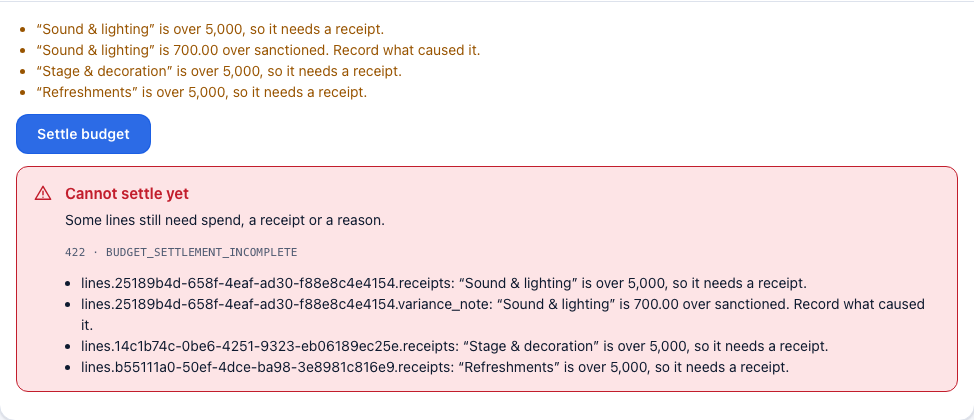
| Message | What to do |
|---|---|
| Enter what was actually spent on at least one line. | Fill in Spent (₹) on the lines and press Save. |
| "…" is over 5,000, so it needs a receipt. | Attach a receipt to that line. |
| "…" is … over sanctioned. Record what caused it. | Write the reason in Why it went over (required) and press Save. |
When the list is gone, press Settle budget again.
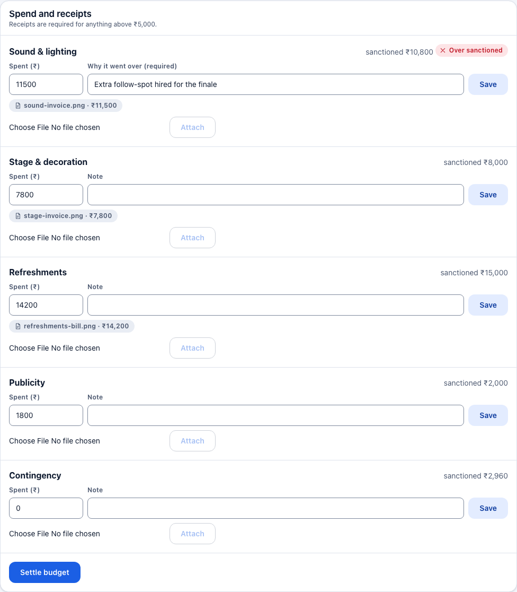
A settled budget shows Settled on with the date. Its spend and receipts can no longer be changed, and the figures count towards the Settled total on your envelope card.
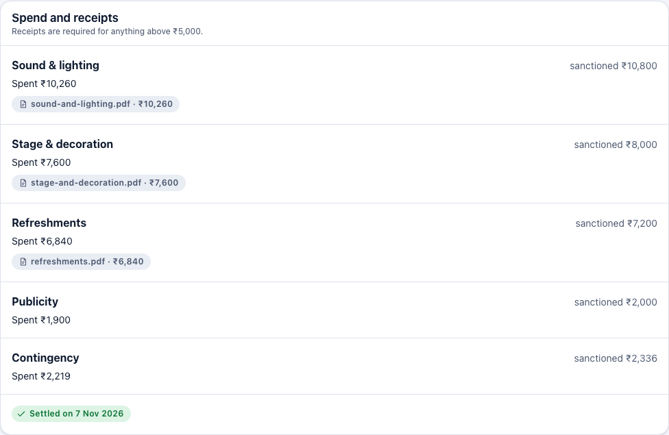
You cannot settle too early. Instead of a list of problems, the page shows one of these notes:
- Not yet. The budget has to be sanctioned before spend is recorded against it. The approvers have not finished yet.
- Not yet. Settle after the event has run… The event has not happened yet. Settlement opens once the event is live, completed or reported.
Good to know
- Who can do what. The President, Vice-President and Treasurer can all price budgets, enter spend, attach receipts and settle. Ordinary members cannot see budgets at all.
- Amounts freeze during review. You cannot edit requested amounts while the Cultural Society, Dean or Vice-Chancellor holds the budget. If it comes back Returned for changes, you can edit it again.
- ₹50,000 limit. Above it, the Vice-Chancellor must also sanction. Fest events always need the Vice-Chancellor.
- ₹5,000 receipt rule. Every line where you spent more than ₹5,000 needs a receipt before settling. Smaller lines do not, but you can still attach one.
- Overspending a line is allowed, but you must explain why before you can settle.
- Sanctioned can be lower than requested. Approvers can cut individual lines. Plan your spending on the sanctioned figure.
- Mistake after settling? A settled budget is closed. Ask the Dean to reopen it.
- No club role approves its own budget. This holds even when someone also holds an approval role.
Known issues
- Raw technical details in the settle error. When Settle budget is refused, the red box
shows
422 · BUDGET_SETTLEMENT_INCOMPLETE, and every message starts with an internal field path such aslines.25189b4d-….receipts:. The friendly list above the button already says the same thing. The red box should hide the code and the field paths (see screenshot 10). - The Settle button is clickable while problems remain. It is enabled as soon as the event has run, even when the list of problems is not empty, so pressing it only produces the error above. Disabling it until the list is empty, or explaining why it is disabled, would be clearer.
- Contingency does not follow edits. The 8 % contingency line is fixed when the template is applied. If you add ₹2,500 of new lines, the contingency stays the same. This may be intentional, but nothing on the page says so.
- A rejected budget still looks editable. For a rejected proposal (Late-Night Improv
Marathon), the Budget list shows Price it, and the budget page still offers Edit,
Remove and Add an entry, even though the proposal can never be sent again. The server
treats
rejectedas editable (Budget.is_editable). It should probably be read-only. - Spend entry is offered before the event has run. On a sanctioned budget whose event is still upcoming (Carnatic Music Recital), the Spent (₹) fields, Save and Attach are already shown. Underneath, the note says "Not yet. Settle after the event has run — spend recorded against an event that has not happened is spend against nothing." I did not try saving spend there, because that budget belongs to the shared demo.